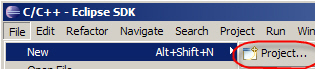
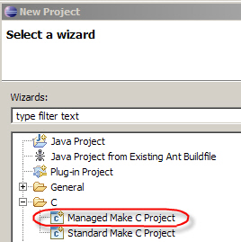
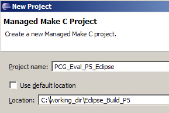
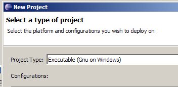
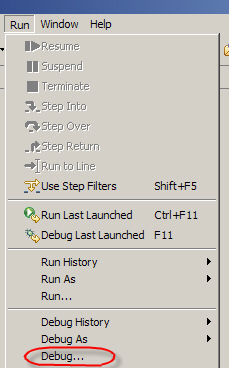
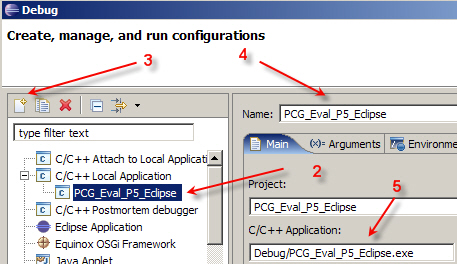
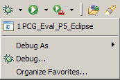
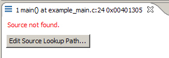
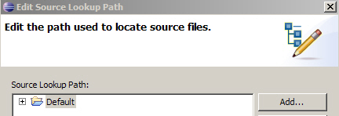
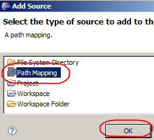

Installing and Using Cygwin and Eclipse
In the modules Integrating the Generated Code into the External Environment and Testing the Generated Code you can use a free software compiler and integration environment: Cygwin and Eclipse.
Contents
Download the Software
Install the Software
- Install Eclipse
- Unzip the file eclipse-SDK-3.2-win32.zip.
- Move the unzipped files to c:\eclipse.
- Unzip the file org.eclipse.cdt.sdk-3.1.1-win32.x86.zip.
- Copy the files from features & plugins to c:\eclipse directories.
- Create a link to the executable file on the desktop (c:\eclipse\eclipse.exe).
- Install Cygwin
- Unzip the file cygwin.zip.
- Run the file setup.exe.
- Select Install from Internet
- Accept the default root directory c:\cygwin.
- Select the default subdirectory as the local package directory
- Change the setting on Devel from Default to Install
- Add the directory c:\cygwin\bin to the system variable Path.
Using Eclipse
- Create a new CDT managed make C project
- Select File > New > Project.

- In the New Project dialog, click C > Managed Make
.
- Name the project rtwdemo_PCG_Eval_P5_Eclipse and Set the location to the build directory.

- Set Project Type to Executable (Gnu on Windows).

- Select File > New > Project.
- Configure the Debugger
- Select Run > Debug.

- Click node C/C++ Local Application.

- Click the Start New Configuration toolbar button.
- Click project name rtwdemo_PCG_Eval_P5_Debug; the name gets populated in the Name field.
- Select the executable file.
- Select Run > Debug.
- Start the debugger
- Click the Debug toolbar button and from the menu select project
rtwdemo_PCG_Eval_P5_Debug.

The first time you run Eclipse, you will get an error related to the Cygwin path

- Click edit source lookup.
- Select Add

- Select Path Mapping

- Edit the Path Mapping
- Select Path Mapping
- Click Edit...
- Click Add...
- Type \cygdrive\c\ in the Compilation path field
- Type c:\ in the Local file system path.
- Click the Debug toolbar button and from the menu select project
rtwdemo_PCG_Eval_P5_Debug.
- Use Eclipse Commands
Command Effect F5 Step into F6 Step over F7 Step out F8 Resume Cntrl+Shift+B Toggle break point